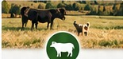
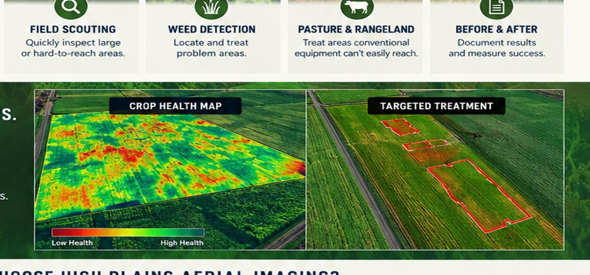

SCOUTING
Inspect large,
hard-to-reach areas.
WYOMING AGRICULTURE. HIGHER POSSIBILITIES.
Agricultural drone spraying and crop-health imaging for Wyoming farms, ranches and agricultural operations.
Targeted, efficient and cost-effective applications for appropriate projects.
Learn More →Identify problem areas early with high-resolution and multispectral imagery.
Learn More →FIELD INTELLIGENCE
Advanced aerial imaging helps you see what’s happening in your fields so you can take action early.
Inspect large,
hard-to-reach areas.
Locate and treat
problem areas.

Treat areas conventional
equipment can’t easily reach.
Document results
and measure success.

CROP HEALTH MAPWHAT WE SUPPORT
DRONE SOLUTIONS FOR REAL-WORLD CHALLENGES
HIGH PLAINS AERIAL IMAGING LLC
We combine agricultural drone application, aerial imaging and field documentation to provide practical information and responsive service. Every project is evaluated around the property, conditions, service requirements and applicable regulations.
START A PROJECT
Tell us what you’re working with, where it is and what you need done.
906-221-6175